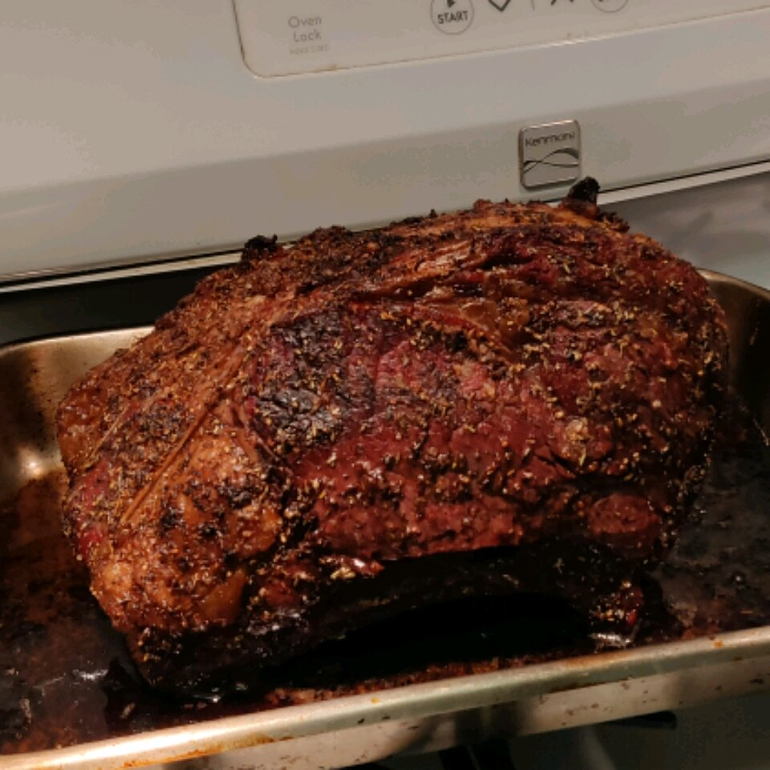

Chef John's Perfect Prime Rib

que vaina más sabrosa, buena suerte preparándola
- 4 pounds prime rib roast
- ¼ cup unsalted butter, softened
- 1 tablespoon freshly ground black pepper
- 1 teaspoon herbes de Provence
- kosher salt
-
Place rib roast on a plate and bring to room temperature, about 4 hours.
-
Preheat an oven to 500 degrees F (260 degrees C).
-
Combine butter, pepper, and herbes de Provence in a bowl;
mix until well blended. Spread butter mixture evenly over entire roast. Season roast generously with kosher salt.
-
Roast the 4-pound prime rib (see footnote if using a larger and smaller roast) in the preheated oven for 20 minutes.
Turn the oven off and, leaving the roast in the oven with the door closed, let the roast sit in the oven for 2 hours.
Remove roast from the oven, slice, and serve.